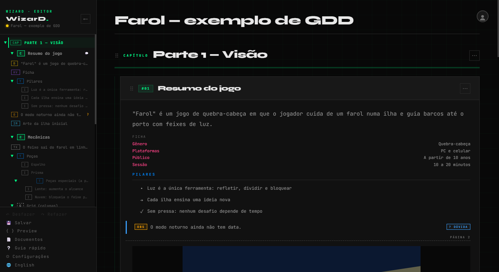
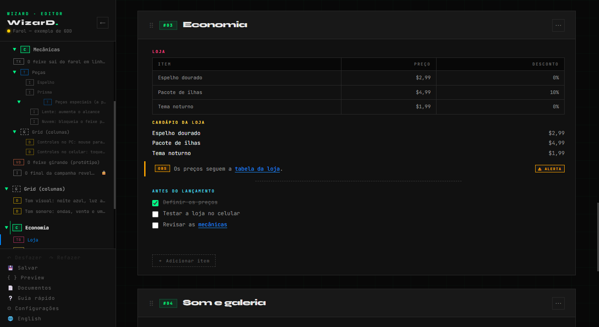
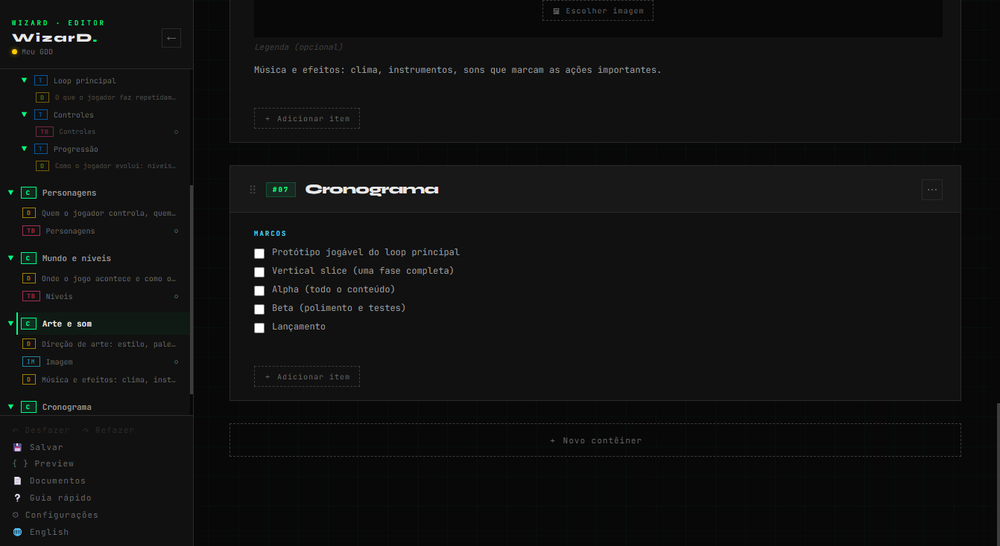

Um editor de GDD que roda no navegador: contêineres, tópicos, tabelas com fórmulas, imagens, vídeos e áudios. Exporta para PDF, DOCX, Markdown e HTML. Seus documentos ficam com você.
A GDD editor that runs in your browser: containers, topics, tables with formulas, images, videos and audio. Exports to PDF, DOCX, Markdown and HTML. Your documents stay with you.

Capítulos, contêineres, tópicos dentro de tópicos, grids, chave-valor, checklists e sumários. Duplo clique edita, clique direito abre o menu, a alça ⠿ arrasta.
Chapters, containers, nested topics, grids, key-values, checklists and summaries. Double-click to edit, right-click for the menu, drag by the ⠿ handle.
Fórmulas ligam um item ao outro e somam, tiram média, mínimo e máximo de colunas, em moeda, porcentagem ou número.
Formulas link one item to another and sum, average, min and max columns, as currency, percentage or number.
Galerias, player de vídeo e de áudio próprios. As mídias ficam numa pasta, ao lado do documento.
Galleries and built-in video and audio players. Media live in a folder, next to the document.
PDF em páginas A4 bem quebradas, DOCX para o Word e o Google Docs, Markdown, TXT e formulário HTML.
PDF with well-broken A4 pages, DOCX for Word and Google Docs, Markdown, TXT and HTML form.
Comentários, destaques de alerta, dúvida e spoiler, busca e substituir, desfazer, e sinais no índice do que falta preencher.
Comments, alert, question and spoiler highlights, find and replace, undo, and signals in the index for what is still missing.
Um modelo de GDD com as partes de sempre (visão, pilares, mecânicas, personagens, mundo, arte, cronograma) e um exemplo completo para explorar.
A GDD template with the usual parts (vision, pillars, mechanics, characters, world, art, schedule) and a complete example to explore.


O WizarD roda inteiro no seu navegador. Os documentos ficam guardados no próprio navegador e nos arquivos que você salvar no seu computador. Nada do que você escreve é enviado a servidores: não há conta, cadastro, cookies de rastreamento nem análise de uso.
WizarD runs entirely in your browser. Your documents are kept in the browser itself and in the files you save on your computer. Nothing you write is sent to servers: there is no account, sign-up, tracking cookies or usage analytics.
O site é hospedado pelo GitHub Pages, que registra dados técnicos de acesso (como o endereço IP) para segurança, segundo a declaração de privacidade do GitHub. O botão "Enviar sugestão ou erro" do app abre o GitHub e envia só o que você escrever, junto com a versão do app e o nome do navegador.
The site is hosted on GitHub Pages, which logs technical access data (such as the IP address) for security, according to the GitHub privacy statement. The app's "Send a suggestion or bug" button opens GitHub and sends only what you write, along with the app version and the browser name.
Como os dados ficam no navegador, limpar os dados do site apaga os documentos que não foram salvos em arquivo. Salve o JSON de vez em quando; o WizarD lembra.
Because the data stays in the browser, clearing the site data deletes documents that were not saved to a file. Save the JSON now and then; WizarD reminds you.